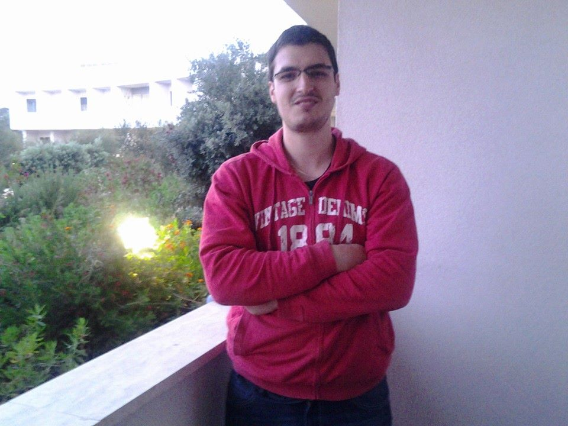

Interview
Stephane Developpeur/Analyst
- Developpeur
- 5ans d'experience dans la société.
- Ficos.Sa
Les experts IT pour les entreprises de construction
- Orgranigramme ici
Présentation des activités
Nous développons principalement notre programme ERP¹ spécialisé dans le secteur de la
construction, ainsi que les outils qui gravitent autour (application mobile Android, plateforme web de tracking
d'équipement et de véhicules.)
Nous développons des outils complètement personnalisés pour des demandes clients (script Python, appli mobile,
web). Nous nous occupons des serveurs DNS ainsi que de l'hébergement web.
Nous fonctionnons comme une boîte de développement classique c'est-à-dire que les commerciaux vont chez les
clients examiner leurs demandes et nous on developpe derrière.
Journée type
Une journée type serait : 8h30 je regarde les mails, si y a il y a des demandes clients je transfère au lead qui
redispatch, je regarde ce qui est prévu dans mes tâches à faire qu'on m'assigne par priorité sous forme de
tickets, nous estimons le temps que ça pourrait prendre et je commence à développer. Assez souvent cette
estimation est incorrecte car il y a toujours des imprévus je prends parfois le téléphone pour du
support niveau 2.
Programmes utilisés :
Des logiciels maison pour le planning
IDE² jetbrain principalement webstorm / pycharm /
android studio
Element du parcours professionel
J'ai fait un Bachelier en informatique de gestion (haute école)J'ai effectué un stage l'université de Messina où
nous avons débuté ce projet de smart City http:/smartme.unimeit/Pendant le stage j'ai faits des tests
d'application mobile crowndsourcing/crowndsensing³ je n'ai eu aucun souci pour trouver
un travail, j'ai été pris
directement dans la première société ou j'ai postulé.
Eventuelle dificultés rencontrées
Contact client je m'explique : Je suis un amoureux de l'algorithmie et cette discipline requiert beaucoup de
concentration. Dans mon metier j'ai pour rôle de faire du support auprès des clients, par exemple répondre au
telephone , résoudre leurs divers problèmes. Ceci interfère hélas d'autres éventuels travaux en parallèle qui
eux sont plus demandants en terme de concentration.
Conseil relatif à l"exercises du métier
- Anglais important pour la doc technique
- Etre auto-didacte / Apprendre à lire la doc
- Faire des concessions sur la beauté du code pour respecter les deadlines ainsi que le budget.
Lexique
- Un progiciel de gestion intégrée ou PGI (en anglais : Enterprise Resource Planning ou ERP) est
un
progiciel qui permet « de gérer l'ensemble des processus d'une entreprise en intégrant l'ensemble de ses
fonctions, dont la gestion des ressources humaines, la gestion comptable et financière, l'aide à la
décision, mais aussi la vente, la distribution, l'approvisionnement et le commerce électronique ».
- En programmation informatique, un environnement de développement est un ensemble d'outils qui
permet
d'augmenter la productivité des programmeurs qui développent des logiciels1. Il comporte un éditeur de
texte destiné à la programmation, des fonctions qui permettent, par pression sur un bouton, de démarrer
le compilateur ou l'éditeur de liens ainsi qu'un débogueur en ligne, qui permet d'exécuter ligne par
ligne le programme en cours de construction2. Certains environnements sont dédiés à un langage de
programmation en particulier.
Dans un environnement de développement « intégré » (abrégé EDI en français ou IDE en anglais, pour
integrated development environment), les outils sont prévus pour être utilisés ensemble (le produit d'un
outil peut servir de matière première pour un autre outil). Les outils peuvent être intégrés dès le
départ, c'est-à-dire qu'ils sont construits dans le but d'être utilisés ensemble. Il peut aussi s'agir
d'un ensemble d'outils développés sans lien entre eux et intégrés a posteriori.
- La production participative1, l'externalisation ouverte ou le crowdsourcing, est
l'utilisation de la
créativité, de l'intelligence et du savoir-faire d'un grand nombre de personnes, en sous-traitance, pour
réaliser certaines tâches traditionnellement effectuées par un employé ou un entrepreneur.
{kind=link}